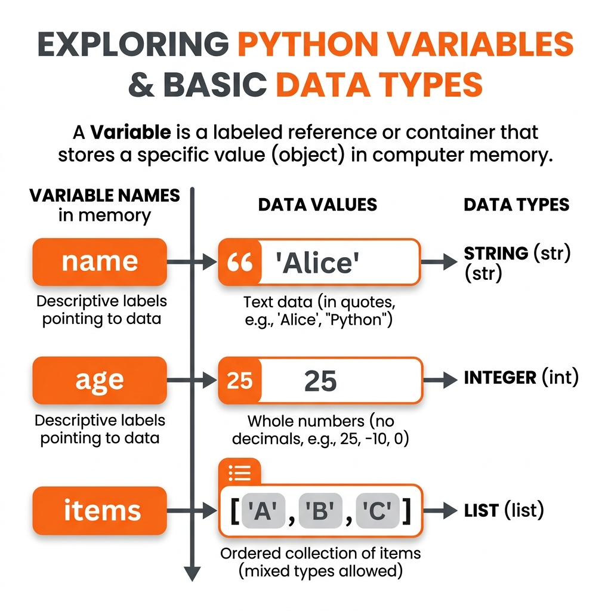
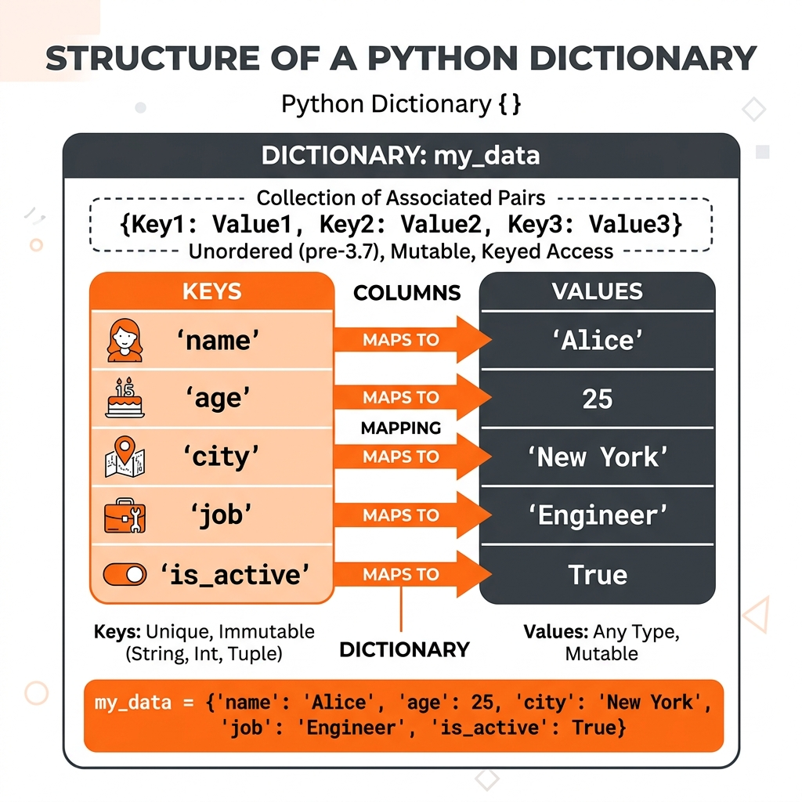
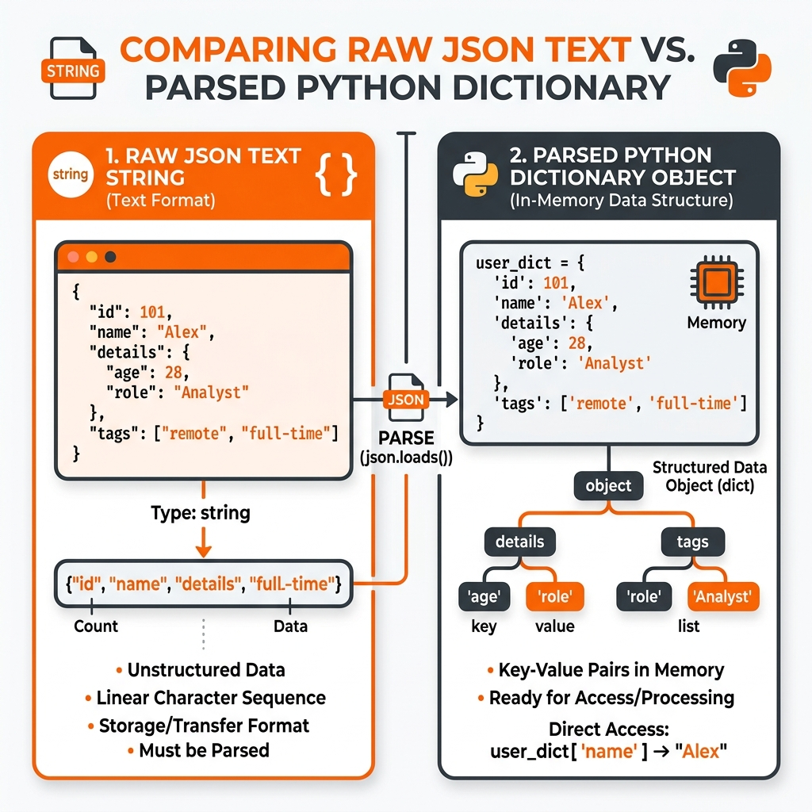

Python Fundamentals for Agentic AI
🎯 Today's Mission & Relevance
- Harden Python 3.12 primitives to create bug-free, type-safe agent state containers.
- Master Pydantic v2 schema validation to eliminate ill-formed LLM JSON hallucinations before execution.
- Build asynchronous concurrency pipelines with full-jitter exponential backoff to survive API outages.
📐 Theoretical Milestones
- Algebraic Type Systems in Python: `TypedDict`, `Annotated`, and runtime type introspection.
- Pydantic v2 Rust core validation engine (`pydantic-core`) and serialization performance.
- Network resilience dynamics: Full-jitter exponential backoff vs. naive linear retry storms.
💻 Hands-On Blueprint
- Program 2.1: Production Type-Safe Agent State Container with `Annotated` and `TypedDict`.
- Program 2.2: Pydantic v2 Automated Tool Schema Extractor with strict Field validation.
- Program 2.3: Asynchronous Multi-Agent Execution Engine with Semaphores and Full-Jitter Backoff.
🛡️ Production Failure Modes
- Silent Type Coercion: Passing unvalidated dictionaries between agent nodes causing downstream runtime crashes.
- Thundering Herd Outages: Retrying failed LLM requests at fixed intervals, amplifying upstream rate-limit errors.
The Problem: Building an AI Agent requires connecting an LLM to the outside world. Your code must sanitize user inputs, loop through multi-step reasoning, ingest unstructured PDFs, and save state to databases. If you don't understand core Python fundamentals like classes, sets, loops, and regex, you cannot build a functional agent.
The Solution: In this session, we will bypass standard Python theory. We will look at exactly 11 Practical Python Programs designed specifically for Agentic workflows—covering everything from OOP Classes to Database CRUD ops.
1. Variables, Data Types & String Manipulation

Variables hold state. When accepting input from a user to feed into an LLM, you must often sanitize Strings.
# Program 2.0-1: Variables & String Manipulation
agent_name = "DataBot-X" # String (str)
confidence = 0.95 # Float (float)
is_active = True # Boolean (bool)
raw_user_input = " Please Parse this PDF! \n"
# String Manipulation: Clean the input before sending to the LLM
sanitized_input = raw_user_input.strip().lower()
print(f"Agent {agent_name} received clean input: '{sanitized_input}'")
2. Control Flow: If/Else & Loops
Agentic AI requires logic. If/Else statements route intent. While loops allow the agent to keep "thinking" until it finds an answer.
# Program 2.0-2: Control Flow (Agentic Reasoning Loop)
user_intent = "calculate_tax"
agent_status = "thinking"
steps_taken = 0
# If/Else logic routes the agent
if user_intent == "calculate_tax":
tool_to_use = "calculator"
elif user_intent == "search_news":
tool_to_use = "web_browser"
else:
tool_to_use = "none"
# A 'while' loop acts as the Agent's reasoning cycle
while agent_status == "thinking" and steps_taken < 3:
print(f"Step {steps_taken}: Agent is using {tool_to_use}...")
steps_taken += 1
if steps_taken == 2:
agent_status = "completed" # The agent found the answer!
print("Agent finished task.")
3. Collections: Lists, Tuples, and Sets
Python provides multiple ways to group data. Lists are mutable (can change), Tuples are immutable (cannot change), and Sets store unique items (no duplicates).
# Program 2.0-3: Managing Memory and Deduplication
# 1. LIST: Ordered and mutable. Perfect for Chat History.
chat_history = [{"role": "user", "content": "Hello!"}]
chat_history.append({"role": "assistant", "content": "Hi!"})
# 2. TUPLE: Ordered and Immutable. Perfect for fixed configurations.
server_coordinates = (40.7128, -74.0060) # Latitude, Longitude (Cannot be altered)
# 3. SET: Unordered, Unique items only. Perfect for deduplication.
extracted_keywords = {"AI", "Python", "AI", "Agents", "Python"}
print(f"Unique Keywords: {extracted_keywords}") # Notice duplicates are removed automatically!

# Program 2.0-4: Dictionaries (Key-Value lookups)
agent_config = {
"name": "Research-Agent",
"model": "gpt-4-turbo",
"temperature": 0.7
}
print(f"Agent is using model: {agent_config['model']}") # O(1) Instant Lookup
4. Functions, Modules, and Classes (OOP)
To write clean code, we group logic into Functions. We pull in pre-written code from Modules. Finally, we use Classes (Object-Oriented Programming) to bundle data (state) and functions (behavior) together into a single "Object".
# Program 2.0-5: Functions and Modules
import math # Importing a built-in Python Module
def agent_calculator_tool(number):
"""A tool function the agent can call."""
return math.sqrt(number)
print(f"Tool Output: {agent_calculator_tool(144)}")
# Program 2.0-6: Object-Oriented Programming (Classes)
class Agent:
def __init__(self, name, model):
self.name = name # State (Attribute)
self.model = model # State (Attribute)
self.memory = [] # State (Attribute)
def add_memory(self, message):
"""Behavior (Method) belonging to the Agent object."""
self.memory.append(message)
return f"{self.name} remembered the message."
# Creating an 'instance' (object) of the Agent class
my_agent = Agent(name="SalesBot", model="Claude-3.5")
print(my_agent.add_memory("Client prefers emails in the morning."))
print(f"Memory size: {len(my_agent.memory)}")
5. Regular Expressions (Regex) & API Communication
When an LLM outputs raw text, it often embeds "tool calls" inside strings like `[Action: SearchWeb]`. To programmatically extract that command, we use Regular Expressions (regex), a powerful pattern-matching language.
# Program 2.0-7: Parsing Tool Commands from LLM Text (Regex)
import re
llm_output = "I need to check the weather. [Action: GetWeather(Tokyo)] I will wait for the result."
# Regex pattern: Match '[Action: ' then capture everything until ']'
pattern = r"\[Action: (.*?)\]"
match = re.search(pattern, llm_output)
if match:
extracted_tool_command = match.group(1)
print(f"Agent triggered Tool: {extracted_tool_command}")

# Program 2.0-8: APIs (JSON Parsing & HTTP Requests)
import json
import requests
api_url = "https://jsonplaceholder.typicode.com/todos/1"
response = requests.get(api_url) # HTTP GET
if response.status_code == 200:
# .json() automatically converts the raw JSON string into a Python Dictionary
data = response.json()
print(f"Agent fetched task: {data['title']}")
6. Data Ingestion & Long Term Memory (Databases)
# Program 2.0-9: Saving Agent Memory to local JSON files (File I/O)
import json
memory = [{"role": "user", "content": "Remember my name is Alice."}]
# Write to disk
with open("agent_memory.json", "w") as file:
json.dump(memory, file)
# Read from disk
with open("agent_memory.json", "r") as file:
loaded = json.load(file)
print(f"Restored: {loaded[0]['content']}")
# Program 2.0-10: Ingesting document data for RAG
import PyPDF2 # Reading PDFs
import csv # Reading Spreadsheets
# Agents use these libraries to extract raw text, which is then sent
# to the LLM as context to answer user questions!
For persistent memory across millions of users, Agents use SQL Databases and perform CRUD (Create, Read, Update, Delete) operations.
# Program 2.0-11: Managing Long-Term Memory (Database CRUD Ops)
import sqlite3
# 1. Connect and CREATE a table
conn = sqlite3.connect('agent_memory.db')
cursor = conn.cursor()
cursor.execute('''CREATE TABLE IF NOT EXISTS users (name TEXT, preference TEXT)''')
# 2. CREATE (Insert): Save user preference
cursor.execute("INSERT INTO users (name, preference) VALUES ('Alice', 'Dark Mode')")
conn.commit()
# 3. READ: Agent fetches the preference
cursor.execute("SELECT preference FROM users WHERE name='Alice'")
result = cursor.fetchone()
print(f"Agent retrieved DB preference: {result[0]}")
conn.close()
12. Modern Python Typing for Agent State Management
In modern agent frameworks (like LangGraph and AutoGen), agents pass structured state dictionaries across dozens of graph nodes. Plain unstructured dictionaries lead to silent runtime `KeyError` bugs. Python 3.10+ provides robust typing primitives:
TypedDict: Defines dictionary shapes with strict compile-time key names and value types. Unlike dataclasses, TypedDicts serialize directly to JSON without overhead.Annotated: Attaches custom metadata or reducer functions to type annotations (fundamental to LangGraph state reducers likeAnnotated[List[str], operator.add]).Optional[T]/Union[T, None]: Signals that an agent attribute may start asNonebefore being populated by a downstream node.
13. Pydantic v2: Schema Enforcement & Constrained Extraction
Large Language Models produce stochastic, unvalidated text. Pydantic v2 is the industrial backbone of agent tooling. It compiles Python classes to high-speed Rust parsers, validating LLM tool arguments, coercing types, and rejecting corrupted payloads before they touch your production database.
# Program 2.0-12: Pydantic v2 Schema Enforcement for Agent Tools
from pydantic import BaseModel, Field, field_validator, ValidationError
from typing import List, Optional
import json
class DatabaseQueryToolSchema(BaseModel):
"""Schema validating SQL generation parameters emitted by an LLM."""
query: str = Field(..., description="The raw SQL SELECT statement to execute.")
tables: List[str] = Field(..., min_length=1, description="List of tables touched by the query.")
timeout_seconds: Optional[int] = Field(default=30, ge=1, le=120)
read_only: bool = Field(default=True, description="Enforce read-only execution.")
@field_validator("query")
@classmethod
def validate_no_mutation(cls, v: str) -> str:
prohibited = ["DELETE", "DROP", "UPDATE", "INSERT", "TRUNCATE", "ALTER"]
if any(keyword in v.upper() for keyword in prohibited):
raise ValueError(f"Security Alert: Destructive SQL keyword detected in read-only tool query!")
return v
# Test 1: Valid LLM Tool Call
valid_llm_output = '{"query": "SELECT user_id, email FROM users WHERE is_active = 1", "tables": ["users"]}'
try:
validated_data = DatabaseQueryToolSchema.model_validate_json(valid_llm_output)
print("✓ Validated Tool Schema Successfully:")
print(f" SQL: {validated_data.query}")
print(f" Tables: {validated_data.tables}")
print(f" Timeout: {validated_data.timeout_seconds}s")
except ValidationError as e:
print(f"Validation Failed: {e}")
# Test 2: Injected Destructive Query from Malicious Prompt
malicious_output = '{"query": "DROP TABLE users; SELECT 1", "tables": ["users"]}'
try:
DatabaseQueryToolSchema.model_validate_json(malicious_output)
except ValidationError as e:
print("\n🚨 Guardrail Caught Malicious Tool Payload:")
print(e.errors()[0]["msg"])
14. High-Throughput Asynchronous Concurrency with asyncio
LLM API calls are I/O bound: your Python process spends 95% of its time waiting for remote GPUs over network sockets. Synchronous code processes documents sequentially (100 docs × 2 sec = 200 seconds). Asynchronous concurrency via asyncio.gather() and asyncio.Semaphore processes 100 documents in parallel within 5 seconds without hitting provider rate limits.
# Program 2.0-13: Async LLM Concurrent Batch Processor with Semaphore
import asyncio
import time
from typing import List
async def simulate_async_llm_call(doc_id: int, semaphore: asyncio.Semaphore) -> dict:
"""Simulates an asynchronous HTTP request to an LLM provider with concurrency bounds."""
async with semaphore: # Bounds concurrent requests to avoid HTTP 429 Rate Limits
print(f"[Worker] Starting analysis on Document #{doc_id}...")
start_time = time.perf_counter()
await asyncio.sleep(0.5) # Simulate non-blocking network socket wait
elapsed = time.perf_counter() - start_time
print(f" ✓ Finished Document #{doc_id} in {elapsed:.2f}s")
return {"doc_id": doc_id, "summary": f"Summary of doc {doc_id}", "latency_s": elapsed}
async def run_batch_pipeline(total_docs: int = 10, max_concurrency: int = 4) -> List[dict]:
# Limit max active concurrent sockets to 4
sem = asyncio.Semaphore(max_concurrency)
tasks = [simulate_async_llm_call(i, sem) for i in range(1, total_docs + 1)]
results = await asyncio.gather(*tasks)
return results
if __name__ == "__main__":
t0 = time.perf_counter()
print("=== EXECUTING ASYNCHRONOUS BATCH RAG PIPELINE ===")
results = asyncio.run(run_batch_pipeline(total_docs=8, max_concurrency=4))
total_time = time.perf_counter() - t0
print(f"\nCompleted {len(results)} LLM calls in {total_time:.2f} seconds total!")
print(f"(Synchronous serial execution would have required {0.5 * len(results):.2f} seconds)")
15. Fault-Tolerant Retries with Exponential Backoff & Jitter
Enterprise AI APIs regularly throw HTTP 429 (Rate Limit Exceeded) and HTTP 503/504 (Server Overload). Naive code crashes; naive retries hammer the server simultaneously (the thundering herd problem). Production agents must implement Full Jitter Exponential Backoff:
# Program 2.0-14: Production Retry Decorator with Exponential Backoff & Jitter
import functools
import random
import time
from typing import Callable, Any
def retry_with_exponential_backoff(
max_retries: int = 3,
base_delay: float = 0.5,
max_delay: float = 8.0,
retry_exceptions: tuple = (ConnectionError, TimeoutError)
):
"""Decorator granting resilient retry semantics with random jitter."""
def decorator(func: Callable[..., Any]) -> Callable[..., Any]:
@functools.wraps(func)
def wrapper(*args, **kwargs) -> Any:
for attempt in range(max_retries + 1):
try:
return func(*args, **kwargs)
except retry_exceptions as exc:
if attempt == max_retries:
print(f"🚨 [FATAL] Exhausted all {max_retries} retries. Raising exception: {exc}")
raise
# Compute exponential backoff with full jitter
ceiling = min(max_delay, base_delay * (2 ** attempt))
sleep_time = random.uniform(base_delay, ceiling)
print(f"⚠️ [Attempt {attempt + 1}/{max_retries}] Caught {exc.__class__.__name__}. Backing off for {sleep_time:.2f}s...")
time.sleep(sleep_time)
return wrapper
return decorator
# Simulation demonstration
flaky_counter = 0
@retry_with_exponential_backoff(max_retries=3, base_delay=0.3, retry_exceptions=(ConnectionError,))
def call_flaky_llm_api(prompt: str) -> str:
global flaky_counter
flaky_counter += 1
if flaky_counter < 3:
raise ConnectionError("504 Gateway Timeout: Remote GPU cluster busy")
return f"Success on attempt {flaky_counter}! Response to '{prompt}'"
print("=== TESTING RESILIENT RETRY DECORATOR ===")
response = call_flaky_llm_api("Analyze customer churn")
print(f"Result: {response}")
Topic Quiz (10 Questions)
Hands-On Assignments
To solidify your Python foundation, try coding these 5 assignments using the concepts covered today.
Assignment 1: Agent State Config
Task: Create a Python Dictionary named agent_profile. It must contain the keys: 'name' (string), 'version' (float), 'is_online' (boolean), and 'tools' (a list containing 'search' and 'calculator'). Print the dictionary.
Assignment 2: ReAct Reasoning Loop
Task: Write a while loop that simulates an Agent thinking. Start with steps = 0. Loop while steps < 3. Inside the loop, print "Agent is thinking..." and increment steps by 1. Once the loop ends, print "Action complete."
Assignment 3: Regex Tool Extractor
Task: You receive this raw string from an LLM: "I will check the weather. [Tool: Weather(Chicago)]". Use the re module to extract the word 'Chicago'. (Hint: you can use a pattern like r"Weather\((.*?)\)").
Assignment 4: Agent Class Design
Task: Write a Python Class named MemoryAgent. Its __init__ method should take a 'name' and create an empty list called 'memory'. Create a method called remember(text) that appends the text to the memory list.
Assignment 5: JSON Parsing Challenge
Task: Use json.loads() to parse this exact string: '{"user": "Alex", "address": {"city": "Seattle", "zip": "98101"}}'. After parsing it into a dictionary, write the code to extract and print only the zip code.
Official References, Research Papers & Standards
Deepen your engineering foundations with seminal research literature, official framework documentation, and industry standards referenced in today's curriculum:
PEP 589 & Typing Specification
Formal Python standard for TypedDict, structural type checking, and generic type annotations in modern codebases.
View Official Resource →Pydantic v2 Core Architecture & Performance
Official technical documentation covering schema generation, BaseModel field constraints, and Rust-based deserialization.
View Official Resource →Exponential Backoff And Jitter
Marc Brooker's seminal analysis of network retry storms and the mathematical superiority of Decorrelated/Full Jitter.
View Official Resource →Asyncio Coroutines, Tasks & Semaphores
Official documentation for non-blocking I/O, event loops, and concurrency synchronization primitives in Python.
View Official Resource →